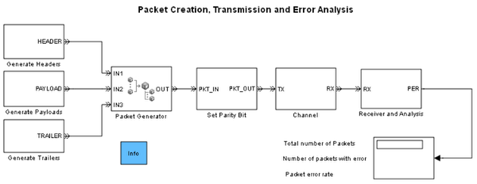
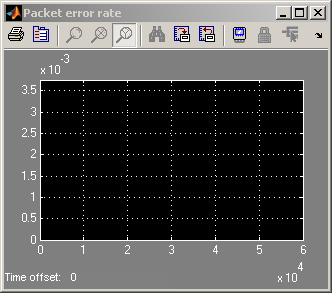

Packet Creation, Transmission and Error Analysis
Contents
Overview
This model illustrates how to create and manipulate entities that represent packets in a communication system.
Packet Creation
These components generate packets at the transmitter:
- Generate Payloads subsystem — Generates entities as a Poisson process. Each entity's Payload attribute contains random binary data.
- Generate Headers subsystem — Supplies an entity whenever a payload requires a header. The entities' PacketID attributes contain a binary-valued vector that counts from 0 to 7.
- Generate Trailers subsystem — Supplies an entity whenever a payload requires a trailer.
- Block labeled Packet Generator, which is an instance of the Entity Combiner library block — Merges the entities representing header, payload, and trailer into one entity representing a packet. The Payload and PacketID attributes are accessible in the packet.
- Set Parity Bit subsystem — Assigns a ParityBit attribute to each packet, using the Payload and PacketID attributes in the computation.
To supply an entity “whenever a payload requires” a header or trailer, the model exploits the interactions among the blocks that store pending entities within the Generate Headers or Generate Trailers subsystem and the synchronizing capabilities of the Entity Combiner block. To learn more about such synchronization, see Example: Waiting to Combine Entities
Transmission via a Channel
The Channel subsystem models a channel that delays packets and randomly introduces bit errors. A bit error can affect the payload, packet ID, or parity bit of a packet. The variable BER in the MATLAB workspace is the probability of a bit error. Addition of errors
Receiver and Error Analysis
The Receiver and Analysis subsystem uses the packet's parity bit to decide whether the packet is correct or contains an error. The receiver can detect an odd number of bit errors in a packet's data.
The Receiver and Analysis subsystem computes these statistics:
- Total number of packets received
- Number of packets in which the receiver detected an error
- Packet error rate, which is the ratio of the two numbers mentioned above
Assuming that each detected packet error corresponds to exactly one bit error, you expect the receiver to detect a packet error rate of
(20C1)BER(1–BER)19 = 20BER(1–BER)19
 Results and Displays
The model includes these visual ways to understand its performance:
- The Display block displays the output of the Receiver and Analysis subsystem throughout the simulation.
- A Scope block plots the empirical and expected values of the detected packet error rate.
- An Instantaneous Event Counting Scope block plots a stem whenever the Receiver and Analysis subsystem detects a packet containing an error.